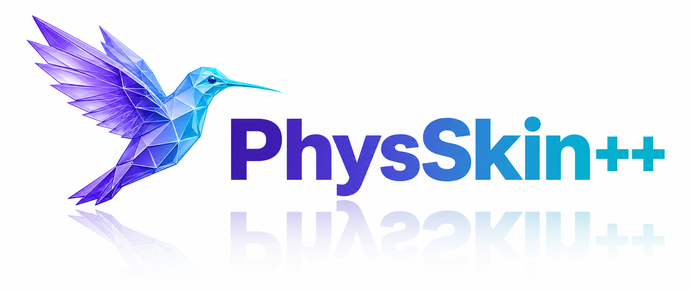

Dirichlet Boundary Conditions
Prescribed regions remain fixed while the unconstrained domain deforms under external forces.

1State Key Laboratory of CAD&CG, Zhejiang University
2Beijing Institute for General Artificial Intelligence (BIGAI)
3Shenzhen University 4University of British Columbia
† Corresponding author
Achieving real-time physics-based animation that generalizes across diverse 3D shapes and discretizations remains a fundamental challenge. We introduce PhysSkin++, a physics-informed framework that addresses this challenge. In the spirit of Linear Blend Skinning, we learn continuous skinning fields as basis functions lifting motion subspace coordinates to full-space deformation, with subspace defined by handle transformations. To generate mesh-free, discretization-agnostic, and physically consistent skinning fields that generalize well across diverse 3D shapes, PhysSkin++ employs a new neural skinning fields autoencoder which consists of a transformer-based encoder and a cross-attention decoder. Furthermore, we also develop a novel physics-informed self-supervised learning strategy that incorporates on-the-fly skinning-field normalization and conflict-aware gradient correction, enabling stable joint optimization of multiple self-supervised objectives. Beyond unconstrained deformation, PhysSkin++ supports Dirichlet boundary conditions, interactive control, environmental contact, and collision-aware multi-object interaction within its reduced animation framework. We further introduce a self-supervised rig-complementarity objective that enriches user-authored rig animations with physics-based complementary elastic deformation. PhysSkin++ shows outstanding performance on generalizable neural skinning and enables diverse forms of real-time physics-based animation.

Given a static 3D shape, the framework samples volumetric cubature points for animation and surface points for shape encoding. A shape encoder produces shape latents, from which learnable queries extract handle latents through cross-attention. Spatial queries then attend to these handle latents and decode continuous neural skinning fields. Geometry-only, physics-informed self-supervision optimizes the fields under physical, smoothness, and orthogonality objectives.
PhysSkin++ supports diverse real-time physics-based animations through Dirichlet boundary conditions, interactive dragging, and energy-based boundary penalties for environmental contact.
Prescribed regions remain fixed while the unconstrained domain deforms under external forces.
Users manipulate localized regions of a deformable object through directly applied drag forces.
Boundary-penalty energies model contact between deformable objects and a single inclined plane.
The same boundary-penalty formulation supports sequential contact across multiple planar boundaries.
A point-based IPC-style barrier models inter-object contact, while boundary-penalty energies handle contact with the supporting floor.
Falling rigid bodies transfer collision responses to deformable objects through the shared contact formulation.
Multiple deformable objects are simulated jointly as inter-object contacts evolve over time.
PhysSkin++ enriches rig-based primary animation with physics-based complementary deformation.
Through an interactive rig interface, users manipulate bone poses while PhysSkin++ adds complementary elastic deformation.
PhysSkin++ enriches user-authored rig animation sequences with physics-based complementary elastic deformation.
PhysSkin++ predicts physically consistent neural skinning fields across different geometries.
@inproceedings{lei2026physskin,
title = {PhysSkin: Real-Time and Generalizable Physics-Based Animation via Self-Supervised Neural Skinning},
author = {Lei, Yuanhang and Cheng, Tao and Li, Xingxuan and Zhao, Boming and Huang, Siyuan and Hu, Ruizhen and Chen, Peter Yichen and Bao, Hujun and Cui, Zhaopeng},
booktitle = {Proceedings of the IEEE/CVF Conference on Computer Vision and Pattern Recognition (CVPR)},
year = {2026}
}